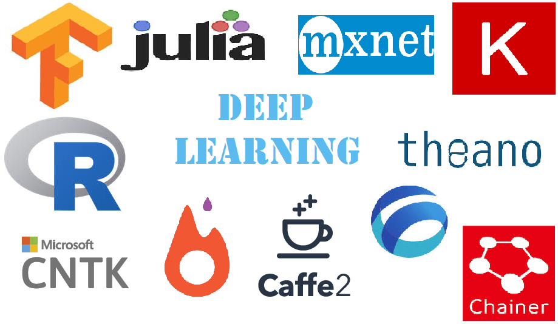

Blog
Free Machine Learning Courses
Machine Learning / Deep Learning
- CS229 Machine Learning
- CS229M Machine Learning Theory
- Cornell CS5787 Applied ML
- CS230 Deep Learning
- CMU Deep Learning
- NYU Deep Learning
- CS 294 Deep Unsupervised Learning
Deep Learning for Computer Vision
Natural Language Processing
- CS124 From Language to Information
- CS224N Natural Language Processing with Deep Learning
- CS224U Natural Language Understanding
- CS25 Transformers United
- CMU CS11-711 Advanced Natural Language Processing
- UMASS CS685 Advanced Natural Language Processing
Graph Machine Learning
Reinforcement Learning
- CS234 Reinforcement Learning
- CS224R Deep Reinforcement Learning
- CS330 Deep Mutli-Task and Meta Learning
- CS285 Deep RL
- DeepMind UCL RL Lecture Series
- DeepMind RL Lectures - David Silver
- Deep RL Bootcamp
Miscellaneous
- CS221 Artificial Intelligence: Principles and Techniques
- CS228 Probabilistic Graphical Models
- CS329S Machine Learning Systems Design
- Tiny ML and Efficient Deep Leanring Computing
Mathematics for Machine Learning
Basic Computer Science
Phases of a Machine Learning Project
| Phase | Useful Tools/Libraries |
|---|---|
| Data Acquisition | SQL, pandas |
| Exploratory Data Analysis | numpy, pandas, duckdb |
| Data Annotation | doccano |
| Data Visualization | matplotlib, seaborn, plotly |
| Data Cleaning / Featurization | numpy, pandas |
| Model Development | scikit-learn, xgboost, lightgbm, pytorch, tensorflow, wandb (experiment tracking) |
| Error Analysis | scikit-learn, matplotlib |
| Hyperparameter Tuning | optuna, ray |
| Model Evaluation | scikit-learn, matplotlib |
| Model Explainability | shap, lime |
| Model Demo | streamtlit, gradio |
Useful Python Libraries for Machine Learning
 Image Credit: https://www.analyticsindiamag.com
If you are a new to the field of machine learning, you can get overwhelmed with the variety of sub-fields available under the umbrella of machine learning. For each subfield, there are specific libraries to help you with getting the task done. In this blog, we will glance over the different libraries and their use cases.
General Purpose Machine Learning Libraries
Scikit-Learn
Scitkit-learn provides all popular machine learning algorithms and functions for data transformation to error analysis pre-built into it. It is a recommended library for getting started with machine learning. One can tweak the parameters in algortihms and see the changes in the performance of model.
Tensorflow
Most of the people take tensorflow as deep learning library but at its core it just converts mathematical operations into a computational grpahs. Hence, any machine learning algorithm can be developed in tensorlfow. The implementations of Logistic Regression and Linear Regression in tensorlfow can be easily found in web.
Working with Videos/Images
OpenCV
OpenCV is the most popular library for working with images and videos. It provides all basic operations to be executed on images. It enables us to control webcam and take images or video-feed from it. Hence, it becomes suitable for live projects of object detection, face recognition etc.
Scikit-Image
It provides optimized image transformation operations.
DLib
It provides deep learning based implementations for face detection and object detection.
Working with Text Data
NLTK
NLTK (Natural Language TooKit) provides basic operations for text pre-processing.
Spacy
Spacy provides all text pre-processing functions along with deep learning based models for various NLP tasks.
Stanford-NLP
It is developed in Stanford as evidnet from name. It is a cutting edge library which features latest developments in the field of NLP.
Gensim
Gensim contains various trained models for word-embeddings and topic-modelling.
Reinforcement Learning
OpenAI Gym
For most of reinforcement leraning tasks, an enviornment is required where agent can perform actions and learn. Gym provides various environments where one can train agents. The environment includes atari games, robotic simulations and alot of other fancy things.
PyGame
If you want to create a new environment (or a new game) and train agent in it, you can build it with PyGame.
Keras-RL
Keras-RL is deep reinforcement learning library. It provides deep architectures which can be trained in Gym or other environment. It features popular algorithms such as DQN.
Deep Learning Libraries
Theano
Theano was developed by MILA and it is predecessor of all deep learning frameworks. But now MILA has stopped its development after 1.0 release.
Tensorflow
Tensorflow is the most popular library for machine learning. It emphasized on the concept of computational graphs. It is well suited for distributed computing. It is supported by Google.
Pytorch
Pytorch is being developed by Facebook and it is the main rival of Tensorflow. Pytorch also provides a dynamic graph execution.
Keras
Keras is a high-level wrapper on existing deep learning frameworks. It supports theano, tensorflow and mxnet as its backends. It is recommended for beginners as deep learning architectures can be made very easily, quickly and without in-depth knowledge of neural networks.
Other Deep Learning Libraries:-
H2O
Supported by H2O.ai which provide several deep learning solutions such as Driverless AI
Caffe
It was originally developed by Berkley AI Research (BAIR) group, but now it is advanced by Facebook
CNTK
A deep learning library provided by Microsift
MXNet
MXNet is supported by Amazon
Most of the deep learing libraries have two different versions for CPU and GPU. The GPU version of the library takes advantage of CUDA acceleration and performance gain is enormous. So, if you have Nvidia graphics card, setup CUDA and install gpu version of the library.
Other Supporting Libraries
Numpy
Numpy is a library for processing numerical data. It is useful in data pre-processing step. It gives good performance when vectorization is used. It also provides very optimized implementations of common mathematical operations.
Pandas
Pandas is used for mix data as it can handle strings and numerical data as well. Several useful transformations are already implemented (such as fixing null values, one-hot encoding) and easily handles datetime data. It has become popular for data preprocessing.
Scipy
Scipy provides complex mathematical operations such as convolution and matrix inversions along with various statistical functions. It also serves as backend of Scikit-Learn and Scikit-Image.
Matplotlib
Matplotlib is most popular library for data visualization. Data visualization is helpful in analyzing the data during EDA (Exploratory Data Analysis).
Other popular libraries for data visualization:-
Bokeh, Plotly, Seaborn, Graphviz
Keyword Extraction
 Image Credit: www.adaringadventure.com
Image Credit: www.adaringadventure.com
Keyword Extraction using RAKE
1. Why perform keyword extraction?
- Reduces the dimensionality of text
- Find summery of text (What this documents is about?)
- Fetch similar documents in Information Retrieval System
- Classify Documents when there are large number of categories
2. How to perform keyword extraction?
I. Candidate Selection
II. Property Calculation
III. Scoring of potential keywords and final selection
3. Rapid Automatic Keyword Extraction (RAKE)
-
Use punctuations and stopwords as boundaries. Keyword phrases are assumed to be lying between these boundaries (in ideal case tokens should be stemmed as well before this step). These words are often called Candidate Words/Phrases.
-
RAKE computes the properties of each candidate, which is the sum of score for each word in phrase. The words are scored according to their frequency and typical length of candidate phrase in which they appear.
-
Rank keywords based on RAKE score
4. Error Estimation
-
Match keywords obtained from model with keywords hand assigned to the document.
-
Precision : Percentage of correct keywords among those extracted
-
Recal : Percentage of correctly extracted keywords among all correct ones
Additional Notes
Advantages of RAKE
I. Doamin Independence
II. Good Precision
Scoring in RAKE
Score(word) = Degree(word) / Frequency(word)
Frequency(word) = Number of times word occurs in document
Degree(word) = Similar to degree of node in a graph. It is number of times a certain word co-occurs with other candidate keyword
Setting Up Ubuntu/Debian System for Deep Learning
 Image Credit: https://mytechshout.com
Image Credit: https://mytechshout.com
As I started my journey to learn coding, I was introduced to Linux by my mentors. Primarily Linux was used by programmers but now a days it has garnered popularity in all domains. There are many Linux based operating systems available out there but Ubuntu has become most used UNIX based OS. It is widely used in industries and universities. In this blog we will discuss what applications and tools are required/suggested to setup in a fresh ubuntu installation for working on machine learning and deep learning projects.
Update the System
$ sudo apt update
$ sudo apt upgrade
Basic Utilities
$ sudo apt install vim gedit-common
$ sudo apt install ubuntu-restricted-extras
$ sudo apt install vlc
$ sudo apt install classicmenu-indicator
$ sudo apt install redshift redshift-gtk
$ sudo apt install terminator
$ sudo apt install unity-tweak-tool
Install Google Chrome from .deb package
Notes and Others
$ sudo apt install nixnote2 #(To connect with evernote)
Install Simple Note from .deb package (Take notes in cross platform app)
Download Medium Desk and extract it to /opt folder (Read blogs on medium)
Development Tools
$ sudo apt install gcc g++
$ sudo apt install cmake build-essential
$ sudo apt install python-pip python-dev (for python3 use: python3-pip , python3-dev
$ sudo apt install openjdk-8-jre
$ sudo apt install git
Text Editors
Install Sublime Text3 from official site
Download Menlo font (Its my favorite font but it is not available in Ubuntu, so you have to install opensource version)
Install VS Code site
Python for Data Science
1. Make Virtual Environment
$ sudo apt install python-virtualenv
$ mkdir ~/env_name && cd ~/env_name
$ virtualenv env_name
2. Activate virtual environment
$ source ~/env_name/bin/activate
3. Deactivate virtual environment
$ deactivate
Install Python Libraries
$ pip install numpy matplotlib pandas
$ pip install scipy scikit-learn scikit-image pillow
$ pip install jupyter jupyterlab
$ pip install nltk
$ pip install spacy
$ pip install tensorflow keras
$ pip install xgboost
Install CUDA
1. Install Nvidia Graphics Driver from Software & Updates
Download cuda_x.deb packages
Download cudnn_y.deb packages
$ sudo dpkg -i cuda_x.deb
$ sudo apt update
$ sudo apt install cuda
$ sudo apt upgrade
2. Add Cuda in Path
Add following path to ~/.bashrc file
export CUDA_HOME=/usr/local/cuda-x.y
export LD_LIBRARY_PATH=${CUDA_HOME}/lib64
PATH=${CUDA_HOME}/bin:${PATH}
export PATH
(where x and y are release numbers e.g. 7.5 or 8.0)
Now we need to install Nvidia’s library for deep learning CuDNN for which you need to make developer’s account in Nvidia. Download the required cuddnn*.deb file.
$ sudo dpkg -i cudnn*.deb
Install Deep Learning Frameworks
$ sudo apt install cuda-command-line-tools
Add following lines to the ~/.bashrc file
export LD_LIBRARY_PATH=$LD_LIBRARY_PATH:/usr/local/cuda/extras/CUPTI/lib64
Install Tensorflow-GPU
$ sudo pip install tensorflow-gpu keras